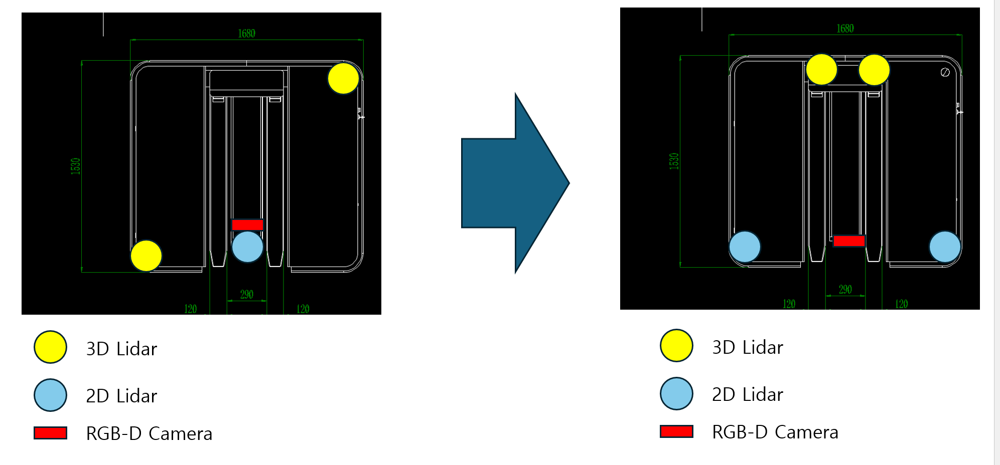

신규 L-type (1200×1530 mm) — 4대 풀 3D 회피 + 반사판 완벽 대응 최종안
전·후방 공중 오버행 완벽 3D 회피 · 360° 저상 안전 · 다중 링 + 하부 이중 반사판(30~61 cm / 0~61 cm) · 전 센서 돌출 0 mm 내장
좌하+우상 · Z=115 mm · 안쪽 35 mm 슬롯. 360° 저상 안전 + 0~61 cm 반사판 백업. 슬롯은 nanoScan3(106×106×80) 호환 치수.
등뼈 끝 · Z=120 mm · +10° · 상단 8 mm 강판 커버. 95×69.5×43 mm(광학창 75×35), 적재 오버행(2.28 m) + 정중앙 3D 팔레트(포크 가림 0%).
타워 중앙 · Z=520 mm · 지붕(590) 아래. 후진·측면 오버행 3D + ≤0.18° 보정 반사율로 30~61 cm 다중 링 반사판 & H530 호환.
중앙 하단 QR(Z=100) + 포크 광전×2 + 후면 충전(Z=180~240) + 7축 서보(Latch 포함) + STO + Orin NX.
0. 인터랙티브 3D CAD 모델 (1200×1530 × 4센서 + 후면 충전 접점)
• 후면 수직 적층(간섭 0 mm):
Z=46~81 Mayser 안전 범퍼 → Z=115 하부 대각 2D 스캔면 → Z=180~240 후면 매립 충전 접점(±48V·파일럿, 돌출 0) → Z=340~510 10.1" HMI·비상정지 → Z=520~590 뒤 타워 3D(Hesai XT32/OS0).• 후진 충전 도킹 장점 3가지: ① 전방 등뼈
RoboSense E1R의 도킹 충격·분진·하방 -35° 광선 간섭 완전 제거, ② 충전소 도킹 시 포크가 벽이 아닌 통로 쪽을 향해 안전, ③ 뒤 타워 3D가 충전소 반사판·마커를 정면으로 보며 정밀 후진 도킹(적재 중에도 가림 없음).• ※ 기존 T10 벽면 충전소(접점 높이 Z=85~125 mm)를 개조 없이 재사용해야 하는 현장이라면, 충전기 브러시 높이를
Z=210 mm로 1회 올리는 것이 정석(불가 시 후면 Z=95~135 mm 매립 + 도킹 말단 15 cm만 뒤 2D 마스킹).
1. 1:1 등축 3면도 (측면도 · 평면도 · 정면도)
기본 표시 = 4대 풀 3D + 반사판 완벽 대응 최종 확정안 · 상단 버튼으로 조건부 대안 비교 가능2. 핵심 해법: 뒤 타워 3D로 5 cm 반사판까지 완벽하게 읽는 방법
수평 ≤0.18° 보정 반사율 3D 선정(다중 링) + 하부 nanoScan3 Pro(0.17° RSSI) 0~61 cm 이중 백업| 뒤 타워 3D 후보 모델 | 수평 분해능 (@10 Hz) |
8 m 점 간격 | 5 cm 반사판 코드 판독 | 후진 공중 오버행 | 선정 판정 |
|---|---|---|---|---|---|
| Hesai XT16 / XT32 (+5~10° 살짝 상향 틸트) |
0.18° | 2.5 cm (6 m서 1.9 cm) |
2~3점 · 다중 링 동시 타격 Calibrated Reflectivity 지원 |
후방 2~3 m 높이 1.45~1.9 m |
★ 가성비 1픽 세로 1.0° 밀집 |
| Ouster OS0-32 / 64 (2048 모드 · 90° VFOV) |
0.176° | 2.45 cm | 2~3점 · 다중 링 동시 타격 Calibrated Reflectivity + IP68 |
수직 90° 광각 후방 최강 |
성능 1픽 수직 90° 무사각 |
| 0.40° | 5.6 cm | 5 cm 띠 누락 위험 8 m서 점 사이로 띠가 빠짐 |
광각 양호 | 반사판 탈락 |
① 2D보다 오히려 강한「다중 링 반사판」
2D는 1줄이라 턱·감속으로 차체가 1°만 숙여도 반사판이 끊기지만, 타워 3D(XT32·OS0)는 30~61 cm 세로 반사 테이프를 3~5개 수직 링이 동시에 타격해 흔들림에도 안정적입니다.
② SW 재활용: 가상 2D 슬라이스 추출
타워 3D에서 Z=460~560 mm(0° 부근 링)만 가상 2D 스캔으로 투영해 기존 oneweave-native SLAM·반사판(Z2_V8/H530)에 그대로 넣고, 전체 3D 점군은 회피에 씁니다.
③ 하부 2D 이중 백업 (서향 pairs=0 해소!)
하부 대각 SICK nanoScan3 Pro도 0.17° + RSSI 반사강도를 출력합니다. 기둥 테이프를 0~61 cm로 붙이면 적재로 타워 앞이 가려도 하부 2D가 360° 양방향 반사판을 계속 읽습니다.
3. 매립 포켓 4× 확대 단면도 (돌출 0 mm 기구 기준)
모든 3D·2D 센서가 차체 외곽선·타워 지붕 안쪽으로 완전 수납4. 하부 2D 라이다 선정: 일반용(실측 비교) vs 안전용(PLd)
코스메카 실측 기준 일반용 2D 반사판 성능 비교 + 안전용(Fail-Safe/STO) 전환 전략| 구분 / 추천 모델명 | 분해능 · 거리 | 5 cm 반사판 인식 성능 (실측) | 특징 · 안전 정지 | 추천 용도 |
|---|---|---|---|---|
| [일반 1픽 · SW 무수정] Focusray 0.1° (기존 L-type 타워 동일품) |
270° · 0.1° 30 Hz · 40 m |
✅ 6~8 m 100% 분리 검증 ※ 주의: 기존 T10 하부 저가형(0.333°)이 아닌 타워용 0.1°(2701점) 사용 필수 |
기존 oneweave-native 드라이버 100% 무수정 즉시 사용. 비안전형(SW 정지). |
시제품 즉시 호환 명판 품번 확인 발주 |
| [일반 1픽 · 반사판 최고] FreeOptics C2 / R2 (C2: 50×76×50mm, 130g) |
270° · 0.1° 30 Hz · 45 m |
✅ 코스메카 실측 1위! 12-bit(0~4095) 밝기로 8.9 m 3줄 40/40 완벽 분리(T10 타워보다 우수, 41 m까지 감지) |
초소형(50×76×50 mm)·저전력(≤3 W)·IP65/TCP + I/O 16×3. ⚠ 같은 사 H1은 8-bit 오버플로우(255→0)로 반사판 금지! |
일반용 성능 최강 가성비 + 초소형 |
| [양산 · 안전용 1픽] SICK nanoScan3 Pro I/O (NANS3-CAAZ30AN1) 대안: Hokuyo UAM-05LP-T301 |
275° · 0.17° ~25~33 Hz · 40 m |
✅ 0.17° + 이더넷 RSSI 출력 8 m서 2.4 cm 간격 → 0~61 cm 반사판 전방 적재 백업 겸용 |
PLd / SIL2 / Type 3 인증 PC가 죽어도 OSSD → Safety Relay → STO 0.06~0.08초 하드웨어 정지 + 오염 자동 감지. |
양산 · 대기업 납품 PLd / SIL2 인증 |
SICK nanoScan3 Pro(106×106×80 mm) 치수로 사전 가공해 두면 양산·대기업 납품 시 차체 수정 없이 바로 교체됩니다.
5. 1.5 t 확정 상세 기구 설계 사양 — 중앙 하단 QR · 7축 구동/서스펜션 · 연장 가위/진입높이(Latch)
실제 110부품 3D CAD(.glb/.step) 기준 · Ø185×100 광폭 구동륜 · 155 mm 포크 · 318 mm 연장 X가위 + 초기 캠 적용① 몸체 정중앙 하단 QR 인식 (X=0, Y=0)
- 위치: 구동축 회전 중심
(X=0, Y=0), 렌즈 높이Z=100 mm(최적 작동거리 80~120 mm). 제자리 회전 시에도 QR이 시야 중심 유지. - 방호: 바닥판(
Z=46 mm)Ø85 mm매립 강화유리창(돌출 0) + 확산 링 LED 내장. - 배치 정합: 중앙 등뼈(폭 260 mm) 내
48V 100Ah LFP배터리 전방(X=+75~+655) 배치, 후면 충전 버스바는 좌측 우회로 간섭 0.
② 1.5 t 광폭 고정 구동 2축 + 서스펜션 ×4
- 구동 모듈 ×2:
Ø185×100연질 PU 75A(허용 ~1,250 kg/륜, 1.5t 편하중 961 kg 대비 +30% 여유, 간격 790 mm) + 40:1 직각 감속기(542 N·m) + 110각 48V 1.5 kW 서보 +Kinco FD144S ×2. - 캐스터 ×4:
Ø100×30쌍바퀴(LAG G80 7470, 600 kg/개, 급정지 463 kg 대비 1.3배 여유) +10t흔들 레버 + 코일오버(앞 60 / 뒤 30 N/mm) + 우레탄 멈춤(400 N/mm). - 효과: 폭 1200 mm 여유로 광폭 바퀴·캐스터 쓸림(382~568) 간섭 0 · 전도 여유 3.2배↑.
③ 1.5 t 강화 포크(155mm)·연장 가위(318mm)·Latch
- 신축(1축): 폭 155 mm 강화 포크 +
HGR20레일×2 + 등뼈 후방 서보(1회전=6.42 mm,FD144S×1) +Tuofei와이어. - 1.5 t 연장 X형 가위(2축 · 4조):
SCM440열처리318 mm링크 + 초기 경사 캠/웨지(0~14° 데드존 보조, 피크 축력 ≤3.5 t) +Ø28볼스크류(효율 90%) + 복열 스러스트 베어링 → 최대 70° 날 윗면 337 mm (1.5t 구멍 130 mm 파레트 여유 픽업!). - 진입 높이
latchmod rev B(2축):Kinco SMC40S×2 +FD114S×2 + 웜 20:1 +Tr10×2자체잠김 + 편심 롤러(팔 172.4 mm) → 픽 -11(Z=31) ↔ 주행 +9(Z=51).
281 mm 가위의 102 mm 파레트 구멍 한계와 폭 80 구동륜 여유 부족은 ① Ø185×100 광폭 바퀴 ② 155 mm 강화 포크 ③ 318 mm 연장 X가위 + 초기 경사 캠 + Ø28 볼스크류로 해소했습니다.
제작 발주 전 ① 연질 PU 75A 건조 바닥 μ ≥ 0.79 당김 실측(20 mm 턱 단독 등판 확인) ② 1.5 t 연장 가위·초기 캠·Ø20 핀 유한요소(FEM) 강도 검증 2건만 기구 업체에서 최종 확인하면 됩니다.
6. 전 슬롯 추천 모델명 풀 BOM (센서 · QR · 7축 구동/기구 · 안전 · 연산) & 체크리스트
주센서 4대부터 포크 센서 · IMU · 안전 릴레이 · 컴퓨팅 · PTP 스위치까지 빠짐없이 모델명 확정| 품목 / 위치 | ★ 1픽 추천 모델명 (양산 기준) | 시제품 / 가성비 · 대체 모델명 | 핵심 사양 · 선정 근거 |
|---|---|---|---|
| ① 하부 대각 2D × 2 (Z=115, 안쪽 35 mm) |
SICK nanoScan3 Pro I/O (NANS3-CAAZ30AN1, PLd/SIL2) |
• SW 무수정: Focusray 0.1° (T10 타워 동일품) • 반사판 최고: FreeOptics C2 / R2 (⚠ H1 금지) • 안전 대안: Hokuyo UAM-05LP-T301 |
270~275°, ≤0.17°, 반사강도(RSSI) 지원. 360° 저상 안전 + 0~61 cm 적재 전방 반사판 백업. |
| ② 전방 등뼈 3D × 1 (Z=120, +10°, 상단 8mm 커버) |
RoboSense E1R (고체형 120°×90°, 95×69.5×43 mm · 창 75×35) |
• 소형 회전 대안: Livox Mid-360 (-15° 틸트) • 20 mm 턱 필수 시: Stereolabs ZED X Mini (2.2 mm) 또는 LUCID Helios2 Wide |
Min 0.1 m, IP67/IP69K, Ethernet. 적재 중 전방 오버행(2.28 m) + 정중앙 3D 팔레트 인식(포크 가림 0%). |
| ③ 뒤 타워 3D × 1 (Z=520, 지붕 590 아래) |
Hesai XT16 또는 Hesai XT32 (0.18°@10Hz, +5~10° 틸트) |
• 고성능(90° 광각): Ouster OS0-32 / OS0-64 (2048모드 0.176°) • 원가절감(후진3D 생략): FreeOptics R2 / Focusray 0.1° • |
수평 ≤0.18° + 보정 반사율 + PTP. 후진 오버행 + 3~5개 다중 링 반사판 + H530 가상 2D SLAM. |
| ④ 중앙 하단 QR 카메라 × 1 (X=0, Y=0, 렌즈 Z=100) |
Hikrobot SC2000A 또는 Hikrobot MV-ID2004M-06S |
• 글로벌 산업용: Pepperl+Fuchs PGV100-F200A-B25-V1D • 액체렌즈 대안: Cognex DataMan 70 / 150 (6.2 mm) |
작동거리 80~120 mm(100 mm 최적), 내장 확산 링 LED + 바닥 Ø85 강화유리창 매립. |
| ⑤ 포크 끝단 감지 × 2 (좌·우 포크 선단 매립) |
SICK WTB4FP-22161120A00 (초소형 배경억제 광전, IP67) |
• 대안: Keyence LR-TB2000C / Omron E3Z-LS61 • 화물 안착×2: Omron E3Z-D82 / Autonics BJ100-DDT |
0.02~0.8 m, 24 V PNP/NPN, 검정 팔레트 강인. 포크 1250 mm 신축 중 포켓 내부 충돌 정지. |
| ⑥ 포크 길이 센서 × 1 (와이어 엔코더) |
Tuofei (拓飞) 와이어 센서 (기존 T10 동일 Modbus RTU) |
• 산업용 대체: SICK BTF08 / Turck WDS | 스트로크 ≥1300 mm. 기존 T10 Modbus reg 0x4A 호환 유지 시 SW 무수정. |
| ⑦ 6축 산업용 IMU × 1 (차체 중심 강성 마운트) |
Xsens MTi-630 (200~400 Hz, IP68, CAN/UART) |
• 대안: MicroStrain 3DM-CV7-AHRS • 가성비: Wheeltec HFI-A9 / N100 |
3D LiDAR 모션 왜곡 보정(Deskew) 및 회전 오도메트리 융합 필수. |
| ⑧ 안전 제어 · 범퍼 (STO 하드와이어) |
SICK Flexi Soft (FX3-CPU3) + Mayser SL/W 안전 범퍼 띠 |
• 시제품 심플 STO: Pilz PNOZ s4 (또는 SICK ReLy OSSD2) • 안전 PLC 대안: Pilz PNOZmulti 2 (m B0) • 범퍼 대안: ASO Sentir |
비상정지·범퍼(Z=46~81)·nanoScan3 OSSD를 서보 STO 단자에 직결(Kinco DI 의존 폐기). |
| ⑨ 메인 PC · PTP · 무선 (센서망/제어망 분리) |
Jetson Orin NX 16 GB 캐리어 (Advantech MIC-711-ON) + Moxa EDS-G2008-ELP (PTP) |
• x86 대안: Advantech ARK-3534 / Neousys Nuvo-9000 • 스위치 대안: Moxa EDS-4008 · 무선: MOXA AWK-1137C |
3D×2 + 2D×2 + QR 연산 + IEEE 1588 PTP 동기 + eth0(센서)/eth1(제어) 분리 + IO/동력 보드. |
| ⑩ 1.5 t 주행 2축 + 서스펜션 ×4 (광폭 고정 구동 + 600kg 캐스터) |
Ø185×100 연질 PU 75A (~1,250 kg/륜, Blickle Softhane급) + 40:1 직각감속기 + 110각 1.5 kW 서보 + Kinco FD144S ×2 | • 캐스터 ×4: LAG G80 7470 (Ø100×30 쌍바퀴, 600 kg/개) • 서스펜션: 10t 흔들 레버 + 코일오버(앞 60 / 뒤 30 N/mm) + 우레탄 멈춤(400 N/mm) |
구동 간격 790 mm, 1.5t 편하중 961 kg 대비 +30% 여유, 급정지 캐스터 463 kg 대비 1.3배 여유. |
| ⑪ 1.5 t 포크·연장 가위·Latch (총 5축 · 폭 155 · 링크 318) |
• 155 mm 강화 포크 + 318 mm SCM440 X가위 4조 + 초기 경사 캠/웨지 + Ø28 볼스크류(90%) + Kinco FD144S ×3 + HGR20 ×2• 진입높이 latchmod rev B 2축: Kinco SMC40S ×2 + FD114S ×2 |
• 복열 스러스트 앵귤러 베어링 + Ø20 경화핀 + 가로 타이바 • 웜 m1 20:1 + Tr10×2(우측 왼나사) + 편심 캠팔로워 CF8 ×4 + 옆 롤러 ×8 + 8t 보강판 |
진입 높이 -15~+30 mm(픽 Z=31 ↔ 주행 Z=51) + 최고 날 윗면 337 mm(1.5t 구멍 130 mm 파레트 대응) + 초기 축력 ≤3.5 t. |
| ⑫ 배터리 · 후면 충전 · HMI (48V 100Ah · 후진 도킹) |
48V 100Ah LFP + BMS (JBD/JYHY) + 후면 매립 충전 접점 (Z=180~240) + 10.1" IP65 HMI (Winmate W10L100) |
• HMI 대안: iPC2U AVD101P (12~36 V, 1280×800) • 벽면 충전기: 58.4 V 20~30 A 자동 도킹 충전소(브러시 Z=210 정렬) |
배터리 전방 등뼈(X=+85..+635), 충전 접점 뒤 타워 하단 매립(돌출 0, 포크 통로 방향 안전). |
하부 슬롯: SICK nanoScan3 Pro 호환(110×110×85) + 3점 레벨링
좌하·우상 코너 외곽 안쪽 35 mm 매립(시제품 FreeOptics C2 / Focusray 0.1° 공용), ±0.1° 수평 볼트로 바닥 맞음 차단.
등뼈 앞끝: RoboSense E1R(+10°) 상단 8 mm 강판 커버 · 충전 후면 이전
E1R(95×69.5×43)을 Z=120 mm에 매립하고 상단 8 mm 강판(Z=166~174, X=740 경사 처마) + 좌우 60 mm 지주로 4면 방호(+55°/-35°/±60° 손실 0°). 충전 접점은 뒤 타워 하단(Z=180~240)으로 이전.
뒤 타워 중앙: 경사 지붕(Z=590) 아래 Z=520 매립
Hesai XT16/XT32(또는 Ouster OS0-32) 수납 + 지붕 앞뒤 경사 절삭으로 후진 상방 오버행 FOV 확보 및 H530(451~600 mm) 유지.
SW 어댑터 2건: 가상 2D 반사판 + 등뼈 3D 팔레트
① 타워 3D의 0° 부근 링(Z=460~560)을 기존 oneweave-native 반사판/SLAM에 입력, ② 전방 등뼈 3D를 팔레트 인식에 연결.
출고 전 8 m 반사판 코드 1회 벤치마크
선정한 타워 3D(Hesai XT16/XT32 또는 Ouster OS0-32)로 8 m 거리 5 cm 반사 코드(13/17/21/25 cm 간격) 분리율 사전 확인.
안전 배선: SICK Flexi Soft / Pilz PNOZ s4 STO 직결 + PTP 동기
비상정지·Mayser 범퍼·nanoScan3 OSSD는 서보 STO 직결. 3D×2 + Xsens MTi-630은 Moxa EDS-G2008-ELP로 PTP 동기화.
📎 참고: 원본 1680×1530 도면(안 A vs 안 B) 대비 변경 요약
- 도면 A 폐기: 앞 평판(192 mm)에 3D 기구 불가 + 외곽 돌출 파손 + 포크 틈새 2D/RGB-D 직렬 자기 가림 + 우하·좌상 사각.
- 도면 B 폐기: 타워 중앙 병렬 3D 2대 적재 동시 실명 + 하단 2D 편중으로 후방 180° 저상 공백.
- 최종 확정(4대 풀 3D + 반사판): 폭 1200 mm 축소(회전 33 cm 개선) + 하부 대각 2D×2(360° 안전·하부 반사판 백업) + 전방 등뼈 광각 3D×1(적재 오버행·팔레트) + 뒤 타워 고정밀 3D×1(후진 오버행·다중 링 반사판).
